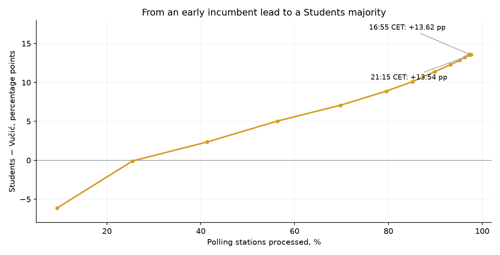
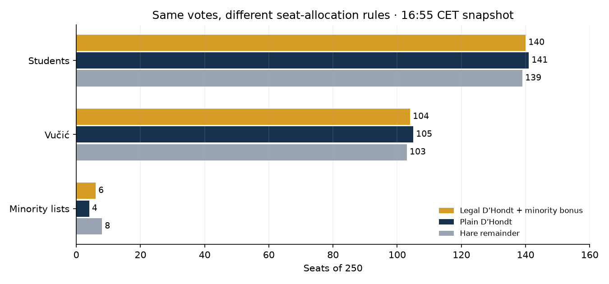
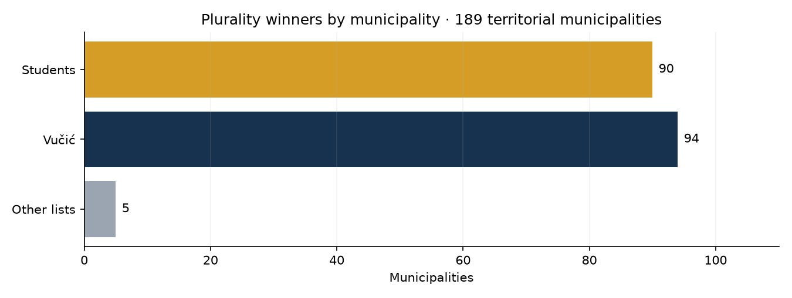
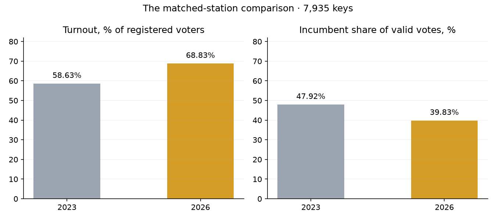

An independent check of the numbers · results still incomplete
Serbia’s published lead changed. What do the numbers tell us?
!
These checks do not show ballot stuffing, but some problems remain unexplained
I checked results from 8,124 polling stations and 189 municipalities, saved at 16:55 CET. I also compared them with 2023, including 7,935 matching station IDs. Each list’s votes add up to its published total. But the number of reported voters does not match the ballot count, some digits look unusual, and some stations stand out. I cannot yet explain these findings. These checks cannot tell us how much manipulation they might miss or guarantee that the election was fair.
⇄
More seats in the model, fewer municipalities won
Using the votes saved at 16:55, I calculate 140 seats for Students / 104 for Vučić’s list / 6 for minority lists. Vučić’s list leads in 94 municipalities, Students in 90. Municipalities have different numbers of voters, so winning more of them need not mean winning more votes. These are incomplete results and a seat calculation, not the official final outcome.
i
What was being elected
The latest saved national results are later than the data used for the detailed checks.
97.60% of stations counted · 21:15 CET
97.24% counted · data checked at 16:55 CET
8,273 stations from the 2023 comparison
Voters chose lists for the 250-seat National Assembly, not a president. Here, “Vučić” means the list bearing his name. Seats are shared across the country using the D’Hondt formula. Lists generally need 3% of the vote, with special rules for minority lists. The results here are still incomplete. The latest saved national table is from 21:15 CET; the polling-station checks and seat calculations use the earlier results saved at 16:55 CET.
Latest saved national results · 26 October, 21:15 CET
8,191 of 8,392 stations counted · 4,248,886 valid ballots
Students
52.71%
Vučić
39.17%
SPS
2.17%
Other lists
4.66%
Invalid ballots
1.29%
The bars divide each list’s votes by all valid and invalid ballots. Counting only valid votes, Students have 53.40%. Reported turnout of 68.83% covers registered voters at stations already counted, not the whole country. The detailed checks and seat calculations use 16:55 CET, when 97.24% of stations had been counted. “Latest” means the latest results saved for this page; it is not a live update. Other lists have 200,649 votes (4.66%). Invalid ballots are separate: 55,500 (1.29%). I calculated the other-list share from vote counts, rather than adding rounded percentages.
i
Three things to take away
The lead changed, the seat calculations give similar results, and some voter and ballot counts do not match.
1
The early results came from a different mix of stations
Vučić’s list led by 6.13 percentage points when 9.38% of stations had reported. In the saved results, Students moved ahead between 25.45% and 41.35% of stations counted. Only about 2.9% of Belgrade stations were included at first. Different areas reporting at different times could help explain the reversal. I have not measured how much that explains, and this does not show that counting was free of problems.
2
Students have a majority under each seat rule I tried
I kept the votes saved at 16:55 and the same eligible lists, then tried different seat-sharing rules. Students get 139–141 of 250 seats, including 140 with the legal bonus for minority lists. This checks the effect of the rules. It does not include uncounted votes, recounts or later corrections, so it is not a forecast of every possible final result.
3
The published totals add up, but voters and ballots do not match
All 18 lists’ totals match between the saved national and local tables after adding prisons and voting abroad separately. Yet at 16:55, reported voters outnumber valid and invalid ballots by 2,650. There are gaps at 565 stations. Matching published tables cannot verify the paper ballots or explain the mismatch.
i
How the lead changed during counting
14 saved updates show Students moving ahead, reaching a 13.62-point lead, then losing a little ground.
In the results saved at 22:04 CET on election night, stamped 22:00 by the source, Vučić’s list led 48.01% to 41.88%. Both percentages include invalid ballots in the total. Students first appear ahead in the saved 00:08 update; the previous update was saved at 23:07. The lead changed sometime between those captures, but I cannot give its exact first change in the live count. Students’ lead reaches 13.62 points at 16:55 and is 13.54 at 21:15. The line joins saved updates; it cannot show what happened between them. Changes may include corrections.

Students’ percentage minus Vučić’s, plotted against the share of polling stations counted. The horizontal axis counts stations, not votes. Dots mark saved updates; lines simply join them. The first saved change in the lead falls between 25.45–41.35% of stations counted.
How to read the prison and overseas results
The saved 21:15 results cover only 8/93 overseas stations. Students have 89.57% of valid and invalid ballots there. Reported voters equal 80.06% of the register at those eight stations, or 11.91% of the full overseas register. That second percentage is incomplete, not final overseas turnout. For prisons, 28/29 stations have reported: turnout is 89.24% of their covered register, and Vučić’s list has 65.61% of valid and invalid ballots. I left both groups out of the domestic station checks. Eight overseas stations cannot tell us how the remaining overseas voters voted.
i
How the rules affect the seats
The minority-list bonus changes the seat totals, but Students keep a majority in each calculation with the same votes.
I apply the 3% threshold using reported voters as the total. The nine recognised national-minority lists are exempt. For those below 3%, Article 140 increases by 35% the quotients used in D’Hondt, the formula for sharing seats. This gives those lists more weight when seats are divided; it does not add votes to their totals. At 16:55, non-minority lists below this model’s threshold had 171,010 valid votes (4.04% of valid votes), including 92,761 for SPS. I kept the unexplained voter/ballot gap in the data. These are calculated seats, not an official award.

Using the same incomplete 16:55 votes, the calculation with the legal D’Hondt formula and minority bonus gives 140 Students seats, 104 for Vučić’s list and six for minority lists. “Plain D’Hondt” removes the bonus. “Hare” also changes the seat-sharing formula. The same lists remain eligible in each case. These calculations do not include uncounted votes or give final seat totals.
Winning more municipalities need not mean winning more votes
At 16:55, Students lead in 90 municipalities, Vučić’s list in 94, and other lists in five. Students have 53.37% of valid votes across these domestic areas. Neither list leads in more than half of the 189 municipalities. This comparison gives every municipality one count, whatever its population. A separate regional seat calculation also gives 140/104/six. It divides seats between regions by the valid votes already counted, keeps the nationally eligible lists, then uses D’Hondt and the minority bonus within each region. I did not try different boundaries or divide regional seats by population.

Number of municipalities led by each list at 16:55. The bars count municipalities of different sizes; they are not a map or a count of equal-sized districts. National seats are based on votes, not municipalities won.
I grouped seven lists outside the governing camp in 2023; together they had 39.49% of valid votes. In the 2026 results, Students, NDSS and European Serbia together have 54.63%; Students alone have 53.44%. These are different groups in different elections. The totals cannot tell us whether the same people changed sides or how much running together helped.
What the checks found · results saved at 16:55
These charts use domestic polling-station results saved at 16:55, leaving out prisons and voting abroad. I used 2023 turnout to set the Shpilkin cutoff, and checked 2023 separately for comparison. Not every 2026 test uses 2023 data. The density chart has separate panels for each year and list. Detailed chart labels remain in English in both page languages. Below I explain what the real data show, what comes from a model or simulation, and the limits of each check.
i
Votes in unusually high-turnout stations (Shpilkin)
Above the cutoff based on 2023 lie 0.12% of Students’ saved votes. Using a cutoff based on 2026 gives 0.31%.
I set the turnout cutoff at 87.97% using the 2023 domestic stations. It is the 99.5th percentile, weighting stations by registered voters: roughly 0.5% of the registered electorate is in stations above that turnout. The blue charts show 2026 only; the dashed line comes from 2023. It is a comparison line, not a boundary between honest and fraudulent voting. In half-percentage-point bins above it are 2,762 Students votes. Leaving out the whole high-turnout area changes Students’ votes as a share of reported voters from 52.65% to 52.77%. It also contains 8,670 Vučić-list votes (0.52%); removing it changes that share from 39.16% to 39.09%. Grouping data by municipality instead puts 4.29% of Students votes above a different cutoff; removing them changes the share by 0.07 points. That calculation also covers a different register. These examples show how the cutoff and grouping affect the result. They do not count fake votes.
2026 domestic stations only. Left: reported voters by turnout. Right: Students votes by turnout, with the bins above the 2023 cutoff in red. Only the cutoff comes from 2023; its turnout curve is not shown. Red votes have not been shown to be fraudulent.Open the full-size chart ↗
i
Does a list do better where turnout is higher?
Across domestic stations in 2026, the link with turnout is positive for Students (weighted r = +0.497) and slightly negative for Vučić’s list (−0.090).
Each dot is a domestic polling station in 2026. The panels show Students, Vučić’s list and SPS. Bigger dots mean more registered voters, within the chart’s size limits. List share is votes for the list divided by reported voters. The correlation, r, measures how turnout and list share move together, giving more weight to larger registers: +0.497 for Students and −0.090 for Vučić’s list. In several regions Vučić’s share rises with turnout, even though the national link is negative. Geography, station size and differences between voters can contribute. The link alone cannot explain the cause or rule out local manipulation. This chart has no 2023 dots.
2026 turnout and each list’s share of reported voters. Each dot is a station, sized by its register within the chart’s limits. Turnout also uses reported voters. A link between two numbers cannot tell us what caused it.Open the full-size chart ↗
!
Groups on the turnout and support chart
The model is told to fit two groups. Finding two fitted shapes does not prove that two distinct voter groups exist.
I asked the model to draw two overlapping bell-shaped groups on each panel: technically, two overlapping Gaussian components specified in advance. The fit resamples stations with weights based on registered voters. For Students in 2026, the fitted centres are (59.0% turnout, 34.7% list share) and (72.1%, 57.3%). The higher-turnout group has a model weight of 0.746. This is a fitting parameter, not a share of fake votes or stations. The toolkit’s older “separated” label means turnout is more than two points higher, list support is higher, and the group’s weight exceeds 1%. This is a rule for flagging a pattern, not a statistical test of cluster separation. It also does not check whether two groups fit better than one. Students meet the rule. Vučić’s list does not meet it in either year: its higher-turnout group has lower support. These fits cannot explain the cause or show that either election was free of manipulation.
How to read this: left to right is turnout. Bottom to top is list votes divided by reported voters. Each coloured cell adds up the registered voters at stations in that cell. Yellow means more registered voters, using a logarithmic scale so both small and large totals are visible. It does not mean more suspicion. A and B mark the fitted centres at lower and higher turnout. The first two panels show Students and Vučić’s list in 2026; the third shows Vučić’s list in 2023 separately. There is no Students list from 2023 in these data.
Separate panels for three year/list combinations, using the same axes and colours. Brighter colours mean more registered voters in that part of the chart; A/B mark the fitted centres. I asked for two groups in every panel. The third panel shows the 2023 comparison separately from 2026.Open the full-size chart ↗
i
Are round percentages unusually common?
Whole-number turnout appears at 2.14% of stations, close to 2.02% in simulations (z = +0.90).
This check counts station percentages that round to whole numbers at two decimal places. I compare them with 200 binomial simulations, using each station’s size and observed turnout. Whole-number turnout appears at 2.14% of stations, compared with a simulated average of 2.02%. The score z = +0.90 means the gap is about 0.9 simulated standard deviations, a measure of the simulations’ spread. For multiples of five, z = −0.30. Students’ vote share gives z = −3.48: fewer whole numbers than expected, rather than the excess this check looks for. Vučić’s list gives −1.46. The separate 2023 turnout check gives −0.88. The scores depend on the model and cannot rule out other forms of manipulation.
2026 only. Left: turnout, with red guide lines at multiples of five. Those lines do not mark detected problems. Right: whole-number turnout in the data and the simulation average; the error bar shows ±2 simulated standard deviations. No 2023 bars are included.Open the full-size chart ↗
!
Do the second digits in vote counts look unusual? (Benford)
SPS looks unusual against both comparison models. The smaller differences for the other lists do not pass the stricter cutoff used for these six checks.
I check second digits in station list totals of at least 10 votes. Benford’s rule gives p-values of 0.0498 for Students, 0.0146 for Vučić’s list and about 1.2×10⁻²⁶ for SPS. A fitted lognormal model, which generates counts along a smooth curve, gives 0.0399, 0.0200 and 0.00249. Small p-values mean the data look unusual under that model; they are not probabilities of fraud. Running several checks increases the chance of a false alarm. The Bonferroni adjustment for the six list/digit checks sets a 5% cutoff at 0.00833. Only SPS’s second digits pass it under both models. This adjustment covers these six exploratory checks, not every check on the page. SPS has 3,844 usable counts, of which 3,811 (99.14%) are just 10–99 votes. Benford’s rule may not fit such a narrow range, and the fitted model may also be unsuitable. The SPS pattern needs a closer look, but does not prove invented counts. The simulated p = 0.00249 is the smallest step possible with 400 simulations (1/401), not a precise fraud probability.
Second digits in the 2026 vote counts, separately for Students, Vučić’s list and SPS, with sample sizes. Grey bars show Benford’s rule. Shading shows the 95% simulation range for each digit separately. It is not a pass range for all digits together or a probability that the election was fair.Open the full-size chart ↗
i
Do the last digits in vote counts look unusual?
Students and Vučić’s list show no unusual difference at the 5% cutoff. SPS has too few counts of at least 100 for a reliable result.
I use station list totals of at least 100 votes: 5,409 for Students and 5,891 for Vučić’s list. Comparing their last digits with equal frequencies gives p = 0.2175 and 0.1317. Neither is unusual at the 5% cutoff, but that cannot verify the count. SPS has only 33 usable totals. The chi-square test expects just 3.3 per digit, too few here for a reliable pass or fail. The separate 2023 NOS list has no totals reaching 100, so that check is unavailable. These three panels show only 2026. Too little data or no flagged difference cannot establish that an election was free of manipulation.
Last digits in 2026 station list totals of at least 100. Grey bars show equal frequencies; shading shows the simulation range for each digit. The SPS panel only describes its 33 usable counts. No 2023 results are shown.Open the full-size chart ↗
i
Which stations differ most from others in their municipality?
146 stations stand out in 2026, compared with 136 in the separate 2023 check.
Comparing stations within each municipality flags 146 of 8,124 (1.80%) in 2026 and 136 of 8,163 (1.67%) in 2023. A flag means turnout or list support has a robust score |z| > 4. The list is Students in 2026 and the incumbent in 2023. Because the lists differ, this is not a controlled measurement of a rise in fraud. The score measures distance from the group’s middle value using the median absolute deviation, rather than the usual normal-distribution significance scale. Small or very similar groups can give large scores. The chart shows only 2026 and compares stations in the same municipality, not necessarily their nearest geographic neighbours. A separate computer method, Isolation Forest, flags 82 stations in each year. It is set to select about 1%, so that count largely follows the setting; it does not estimate the amount of fraud.
2026 scores for turnout and Students support, compared within each municipality. Red marks the 146 stations that stand out. The groups follow administrative boundaries, not distance between stations. These names are places to check, not proven cases of fraud.Open the full-size chart ↗
i
What changed at station IDs that match 2023?
All 8,273 stations from 2023 were saved. Of the domestic station IDs, 7,935 also appear in 2026.
The saved 2023 data include 8,163 domestic stations and 110 prison/overseas stations. All 18 lists’ totals match the saved national result. Among 7,935 matching domestic station IDs, turnout rises from 58.63% to 68.83%, and the incumbent’s share of valid votes falls from 47.92% to 39.83%. I calculate these percentages from the combined voters, registers and valid votes, rather than averaging the station percentages equally. A matching ID does not guarantee the same boundaries or electorate, or tell us how individuals changed their votes. The 2023 results are a comparison, not an independently verified example of an election without manipulation.

2023 and 2026 results for the 7,935 matching domestic station IDs. Left: reported voters divided by registered voters. Right: incumbent votes divided by valid votes. This uses valid-vote shares; the turnout/support charts use reported voters instead.
i
Can the checks pick up fake votes I deliberately add?
Adding simulated votes makes the high-turnout total grow about 31-fold. This shows a response to this particular test change.
I selected about 10% of stations in a copy of the data and added 87,179 simulated Students votes and extra voters. I kept the cutoff at 85.95%, based on the original 2026 data, rather than the 87.97% cutoff from 2023 used in the first chart. Students votes above the line rise from 6,974 to 217,414 (31.17×). This includes existing votes pushed above the line as well as the new votes. It therefore does not count how many fake votes were added. A separate test that rounds percentages changes the turnout score from z = +0.90 to +3.23; it is not shown here. These examples show how the checks respond to specified changes. They do not measure false alarms, test every kind of fraud or verify the original results.
The 2026 data before and after adding simulated votes. “Original” does not mean verified as correct. The hatched bar shows 87,179 added Students votes. The solid bars count all Students votes above the fixed 2026 cutoff. The different sizes show why high-turnout votes cannot simply be counted as fake votes. This chart does not use 2023.Open the full-size chart ↗
i
What these checks cannot tell us
The published results are incomplete, and checking their numbers is only part of checking an election.
At 16:55, results covered 8,160 of 8,392 stations (97.24%). The checks use 8,124 domestic stations after leaving out 36 prison/overseas stations. The latest saved national results reach 8,191/8,392 (97.60%) at 21:15. These percentages count stations, not votes. Uncounted results and later corrections can change the outcome. This page is not a live update.
Reported voters outnumber valid and invalid ballots by 2,650 at 16:55 and 2,656 at 21:15. I kept those gaps as published; I did not count them as fraud or add them to invalid ballots. Neither matching list totals nor a statistical test with no flagged difference explains the gaps.
I did not inspect paper ballots or original station tally sheets, check voter-register quality, or investigate coercion, vote buying, campaign conditions or how election materials were kept and handled. Numbers that fit a statistical model cannot establish that an election was free and fair.
Municipality registers include stations not yet counted; the registers used in station checks cover only counted stations. List shares in the checks divide votes by reported voters. The portal bars divide by valid and invalid ballots together. Seat models and labelled comparisons also use valid-vote shares. The models, cutoffs and digit tests depend on assumptions. A check that raises no flag does not rule out other kinds or amounts of manipulation.
i
Sources, downloads and how to repeat the checks
Saved RIK results, the 2023 comparison and files you can inspect.
Source: the Republic Electoral Commission (RIK) results portal, election IDs 680072 (2026) and 341140 (2023), saved through its JSON API. The latest national results saved here are stamped 26 October 2026, 21:15 CET. The text and charts were reviewed on 27 October; this did not refresh the saved results.
To repeat the checks locally, run zsh analysis-tool/run_forensics_serbia.sh. To make the charts, run analysis-tool/.venv/bin/python serbia-oct-2026/scripts/build_site_figures.py. Code: elections-fraud repository. The raw saved results are kept locally and are not included with this page.